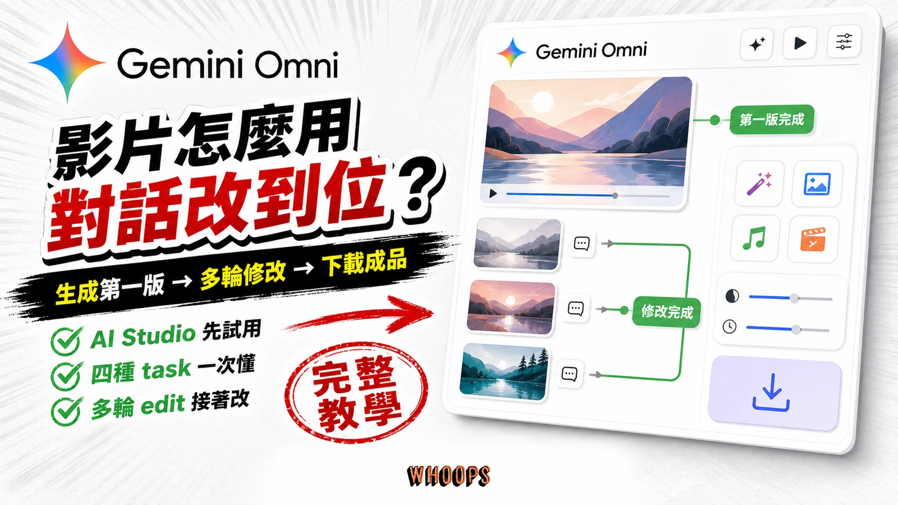

Whoops SEO｜Gemini Omni 影片教學：取得存取、多輪對話修改與限制整理

為什麼保存
這則 Threads 不是單純宣布 Gemini Omni，而是導向 Whoops SEO 的完整教學文。它值得保存的地方在於把 Gemini Omni 的定位講成一條實作流程：取得存取、生成第一支影片、用自然語言多輪修改、下載成品，並提醒付費層、解析度與 Veo 分工等限制。
知識庫先前已保存 Gemini Omni 的發表、Avatar、Google Vids / Flow 等脈絡；這篇則補上「使用者如何實際進入產品並迭代影片」的教學面。
Threads 可見重點
Threads canonical：`https://www.threads.com/@seo.whoops/post/DbkElUFGkuk`。貼文由 Whoops SEO 發布，摘要如下：
- 主題：什麼是 Gemini Omni，以及如何用 Gemini Omni 做影片與多輪對話修改。
- 定位：Google Gemini 3 世代的影片生成與編輯模型。
- 特色：用自然語言把同一支影片一輪一輪修改到定位，而不是每次完全重生。
- 教學涵蓋：取得存取、生成第一支影片、多輪對話式修改、下載成品、付費層計費、720p 限制與 Veo 分工。
- 貼文附連結：`https://seo.whoops.com.tw/gemini-omni/`。
原教學文擷取
Whoops SEO 原文 metadata 顯示標題為「怎麼用 Gemini Omni 做影片：從取得存取到多輪對話修改的完整教學」，發布時間為 2026-08-03T10:21:04+08:00，更新時間為 2026-08-03T11:53:32+08:00。文章摘要稱 Gemini Omni 的最大特色是能用自然語言對同一支影片進行一輪一輪反覆修改，並一次說明付費層、720p 等限制與 Veo 分工。
官方來源查核
Google Gemini 官方影片生成頁可讀，頁面標題為「Gemini Omni：製作及編輯影片也能像聊天一樣輕鬆」，描述為可運用相片、參考樣式和短片製作多模態媒體，並使用 AI 編輯影片。頁面也顯示若尚未在付費方案，需要升級才能解鎖 Gemini Omni。
本次也嘗試開啟 `https://ai.google.dev/gemini-api/docs/video-generation`，但回傳 404；因此本文只保存 App / 官方產品頁層級可查核的內容，不把 API 支援、價格或配額細節當成已確認事實。若要實作 API，仍需以 Google AI Developers 最新文件與帳號實際可見頁面為準。
對欒帥的可用改寫
- **課程行銷短片迭代**：先用一張講座主視覺或教室照片生成影片，再用多輪指令微調光線、鏡頭、字幕氛圍。
- **教學示範**：把「影片不滿意就整支重生」改成「像改文件一樣逐輪修改」，適合做 AI 影像課程 demo。
- **SEO/內容團隊流程**：Whoops SEO 的角度提醒，工具教學文可以同時整理存取、限制、計費與替代模型，避免只寫功能亮點。
- **與 Veo/Google Vids 分工**：Gemini Omni 偏對話式生成/編輯與多模態參考；Veo 或 Vids 的實際可用性仍取決於 Google 產品入口、帳號方案與地區。
風險與限制
- 社群貼文稱「Gemini 3 世代」與計費/720p 等資訊，本文保存為該教學文說法；正式使用仍需看 Gemini App / Google 官方頁面當下顯示。
- AI 生成影片可能帶 SynthID 或其他標記；公開商用前需確認平台政策、素材授權、肖像權、品牌標誌與聲音/人物同意。
- 720p 或輸出品質限制會影響商用品質；高規格廣告、課程預告或品牌影片仍需人工剪輯與後製。
- 多輪修改不代表可精準控制每個鏡頭；需要保留版本、記錄 prompt，並避免把單次 demo 當成穩定產能。
來源
- Threads：<https://www.threads.com/@seo.whoops/post/DbkElUFGkuk>
- 原教學：<https://seo.whoops.com.tw/gemini-omni/>
- Google Gemini 影片生成頁：<https://gemini.google/overview/video-generation/>
- Google Gemini 官方消息入口：<https://blog.google/products-and-platforms/products/gemini/>